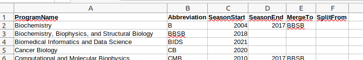

AdmitConfiguration
Configuring AdmissionSuite is more complex than for typical packages (most of which require no configuration at all). To work seamlessly with your admissions system, it must
- know the names and some information about the programs for which you are offering admissions
- be able to connect to your database of applicants and run queries
- be able to parse the tables in whatever format your institution has chosen for representing the data (this step will likely require you to write a few lines of Julia code)
- if your interest is in the web application, you may want to configure your system so the web application gets launched by starting Julia
Each of these requires custom configuration. If these seem daunting, seek help from a local Julia user or contact Tim Holy (WashU) for assistance.
Configuring your programs
This step only needs to be performed once when you first use Admit or AdmissionTargets. If you restructure your programs, you'll want to reconfigure to match the current programs.
Using a spreadsheet program, create a table that, at a minimum, has a single column called Abbreviation and more comprehensively may have some or all of the following columns:

The Abbreviation column must list all your programs. This should be whatever "tag" you like to use to refer to each program, and should not be too long as it will need to fit in dropdown boxes in Admit. Full names can optionally be listed in ProgramName, and indeed this must be set if your database stores records by full program names. For the remaining columns, see the documentation on set_programs. If you need a complete example, see the file examples/WashU.csv within this package repository.
Once done, save the table in Comma-separated value (CSV) format using your spreadsheet program's "Save as" or "Export" functionality. Then, in Julia execute the following set of statements:
julia> using AdmissionSuite, AdmissionSuite.AdmitConfiguration
julia> set_programs()There may be a brief delay (Julia code compiles when you first run it, and this can sometimes take some time), after which it will prompt you to find and select the CSV file.
Alternatively, you can pass the file name as a string, set_programs("/path/to/file.csv"). Note that on Windows, \ needs to be treated specially in strings, but you can write file paths using "raw strings," e.g., set_programs(raw"C:\Documents\Admissions\AdmissionSuite\program_configuration.csv")).
If it returns without error, the process worked. You are now done configuring your programs.
You can check that it worked by typing program_abbreviations at the julia> prompt: you should see a list of the programs you just defined.
Configuring database access
This step only needs to be performed once to establish connectivity to your SQL database. If you change your server URL or other features, you may need to redo these steps.
Admit can directly query applicant records through a SQL interface. This has been tested on Windows, but may work with small modifications on Mac and Linux.
To use this feature, several configuration steps are required. Most of these may not be necessary if you are running Admit from a machine that can already access your database.
If your machine already has access to the database
If your system can already access the SQL database via a "Data Source Name" (DSN), just check whether you have access from Julia:
julia> using AdmissionSuite, AdmissionSuite.AdmitConfiguration
julia> conn = connectdsn(<dsnname>)where you replace <dsnname> with the name of your DSN (for example, connectdsn("DBBS") if you've created a DSN called "DBBS"). The syntax above is applicable if your DSN connects via Active Directory (a "trusted connection" in SQL parlance); alternatively, use
julia> conn = connectdsn(<dsnname>; usepasswd=true)and you will be prompted for your user name and password before attempting to connect to the SQL server.
If this returns without an obvious error, all is well and you can skip below to the section on setting up automatic connections.
While it's possible to store your username and password in your DSN configuration, this is a security hole and not recommended.
If you do not already have access via a DSN, the next sections describe how to configure it.
Installing an ODBC driver
If necessary, install the SQL Server ODBC driver.
Windows
Other platforms
- From the link above, download the MSODBC package for your platform and install it
- Find the library file on your system. At least on Linux, the file will contain "libmsodbcsql" in the name. Library files have
dll,dylib, orsoin their extension. - Start Julia and execute the following:
julia> using AdmissionSuite
julia> libpath = "/opt/microsoft/msodbcsql17/lib64/libmsodbcsql-17.4.so.1.1"
julia> ODBC.adddriver("MSODBC", libpath)where libpath should be the path to the library on your own system.
Now "MSODBC" is a shortcut for the actual driver library.
Configuring the Data Source (DSN)
From within the ODBC configuration utility (Windows)
From within Julia
This approach can be used on non-Windows platforms. After installing the driver, execute
julia> using AdmissionSuite # not needed if you've already done this in the same session
julia> ODBC.adddsn(<dsnname>, "MSODBC"; SERVER=<SQL server URL>, DATABASE=<database name>)The items between <> are items you need to fill in. For example, for WashU's DBBS the line looks something like this:
julia> ODBC.adddsn("DBBS", "MSODBC"; SERVER="someurl.wustl.edu", DATABASE="DBBS")Now, <dnsname> ("DBBS" in the example above) is a shortcut for the DSN.
Putting your user name and password into the DSN configuration is a security hole and not recommended.
Checking your setup
Check your connection described above.
Making your connection automatic
Once you have a DSN, use
julia> using AdmissionSuite, AdmitConfiguration
julia> set_dsn(<dnsname>)Henceforth Admit will connect to the database as needed, all you have to do is respond to password prompts.
Configuring your data tables
Once you can connect to the database, the final step is to configure the ability to extract information from the tables within it. Interally, AdmissionSuite converts the table into a DataFrame, which is similar to a spreadsheet. AdmissionSuite needs to know the names of the columns from which it can extract particular pieces of information.
Extractors come in two flavors: "by name" and "custom function". The latter are used in more complex situations where you might need to reference multiple columns in order to extract a particular item.
"By name" columns
"By name" configuration is done with set_column_configuration; see its documentation for details.
Date formats
Configure Admit for the specific way you represent dates with set_date_format.
Applicant decision and "custom function" configuration
If your database has simple columns like "Accept" (storing true/false/missing indicating whether the applicant accepted the offer of admission) and "Decision date" (storing the date of the applicant's decision), you can just select the appropriate column names with set_column_configuration.
However, if the applicant's decision is stored with more complicated logic (i.e., requires some calculation from multiple columns in the database), the best option is to write a few Julia functions and save them to a file. You then register these functions with set_local_functions; see its documentation for details about which functions need to be implemented and examples of how to write them.
If this step is daunting, seek help from a local Julia user or contact Tim Holy (WashU) for assistance.
Testing your configuration
To test your entire setup, try the following:
julia> using AdmissionSuite, AdmissionSuite.AdmitConfiguration, AdmissionSuite.Admit
julia> conn = connectdsn(...) # fill in "..." with whatever worked to connect to your database
julia> applicants, program_history = parse_database(conn);If that throws an error, something about your configuration needs fixing; the error message should hopefully provide some guidance about what is wrong.
If there is no error, check that the output looks reasonable:
julia> applicantsshould show a list of all applicants, past and present, available from your database.
If you database contains multiple entries for each applicant (e.g., one for each new status update), instead use parse_database(conn; deduplicate=true) to remove the duplicates. For this to work, you'll have to create the when_updated function among your local functions.
Likewise,
julia> program_historyshould show records of your program history.
Launching the web application automatically
If you're configuring this for admissions-professional usage, chances are your main interest is the web application. You can configure this to launch automatically by creating a text file with contents:
using AdmissionSuite, AdmissionSuite.AdmitConfiguration, AdmissionSuite.Admit
conn = connectdsn(...) # fill in "..." with whatever worked to connect to your database
runweb(conn) # add any needed keyword arguments like `deduplicate`Save this as ~/.julia/config/startup.jl in the user account (~ means "user home directory", if necessary search for the .julia folder on your system). This will launch the web application automatically when Julia starts.